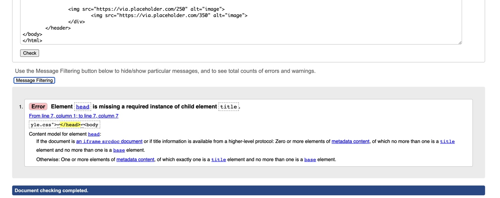

Introduction
I got experience of learning the basics of web development, coding, designing and debugging process as I was a fresher to this module. I came to this college with zero level knowledge of basics of computing, but I got opportunity to learn all the basics from starting level. At first, I was not able to write basic tags of HTML when I came to this college because in my educational background, I haven’t yet studied about all these module contents because I was from science(bio) faculty. Though I had many problems throughout the learning process I tried to learn many more things about it and once I have done my first web page done through all the HTML tags and coding, I was happy with my learning. This helps me to practice them wisely. Day by day I became familiar with coding and debugging process. Throughout my learning I got many problems where Mr. Ankit Thapa helped me to solve all the problems easily.
Observation
As this way in my very first assignment, I got through some errors in my assignment which is shown below;
# Home Page (index.html:

CORRECTION:
• Kept < lang="en"> attribute with html.
• Kept < alt > attribute in image.
REFERENCE
Dadheech, N., 2020. [Online]
Available at: https://www.youtube.com/watch?v=tyopzG1K7lA&list=LL&index=11&t=1176s
[Accessed 12 December 2020].
school, W., n.d. [Online]
Available at: https://www.w3schools.com/
I took reference from above sites to gain more knowledge how to built a homepage and got to learn about many new codes through these sites.
# Portfolio Page(portfolio.html):

CORRECTION:
• Kept < title > tag with title name.
# Contact Page(contact.html):
CORRECTION
• Kept < alt > attribute in image.
REFERENCE
Dev, W., 2018. [Online]
Available at: https://www.youtube.com/watch?v=Vh9ZGdgZmYE&list=LL&index=6
[Accessed 5 April 2018].
I took reference from this site because I had no idea in making a contact form. It helped me to give some ideas about contact form and made me easy for creating this page.
# CV (cv.html):
CORRECTION
• Open elements were closed. (< div > < /div > )
REFERENCE
Islam, Z., 2020. [Online]
Available at: https://www.youtube.com/watch?v=OX6QP0TlvYs&list=LL&index=5
[Accessed 13 May 2020].
I took reference for the grid purpose. I had no idea at first how should I grid the box into two parts practically. So I took reference from this site to make CV .
# Background Image:
REFERENCE
Aenami, 2020. [Online]
Available at: https://wallhere.com/en/wallpaper/1859717
[Accessed 05 August 2020].
I kept this picture as my background image at my webpage.
#Hamburger Menu:
REFERENCE
CodingNepal, 2020. [Online]
Available at: https://youtu.be/tcskp-ncN0I
[Accessed 15 September 2020].
Anon., n.d. Font awesome cdn cloudflare. [Online]
Available at: https://cdnjs.com/libraries/font-awesome
Progress Report
# Home Page:

As this is my first portfolio website, I got ideas of keeping my photo on my home page. This is my very first assignment so I tried hard for this to be prepared well as I can.The above two images show the difference in my working skills.
# Portfolio Page:
As shown in the above pictures I had brought place holder image which has been placed side by side with some spaces in my portfolio page, which is shown in the picture in right side.
# Contact Page:
As shown in the above pictures I have kept my location map in left side of the form.
# CV Page:
As shown in the above picture I have gave proper CSS to make it responisve and to make it attractive.
# CONCLUSION:
As this was my very first assignment, I have prepared it well for submission. From this I got many knowledges about preparation of webpage and got familiar with HTML and CSS. Finally my webpage is created with many obstacles but I tried my best to give my best as per my knowledge.